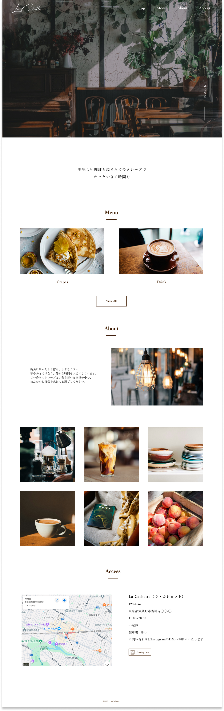
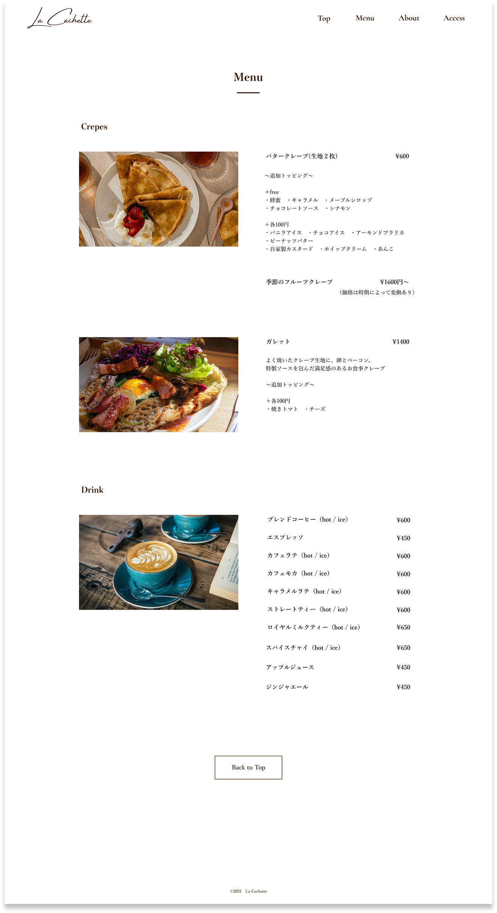
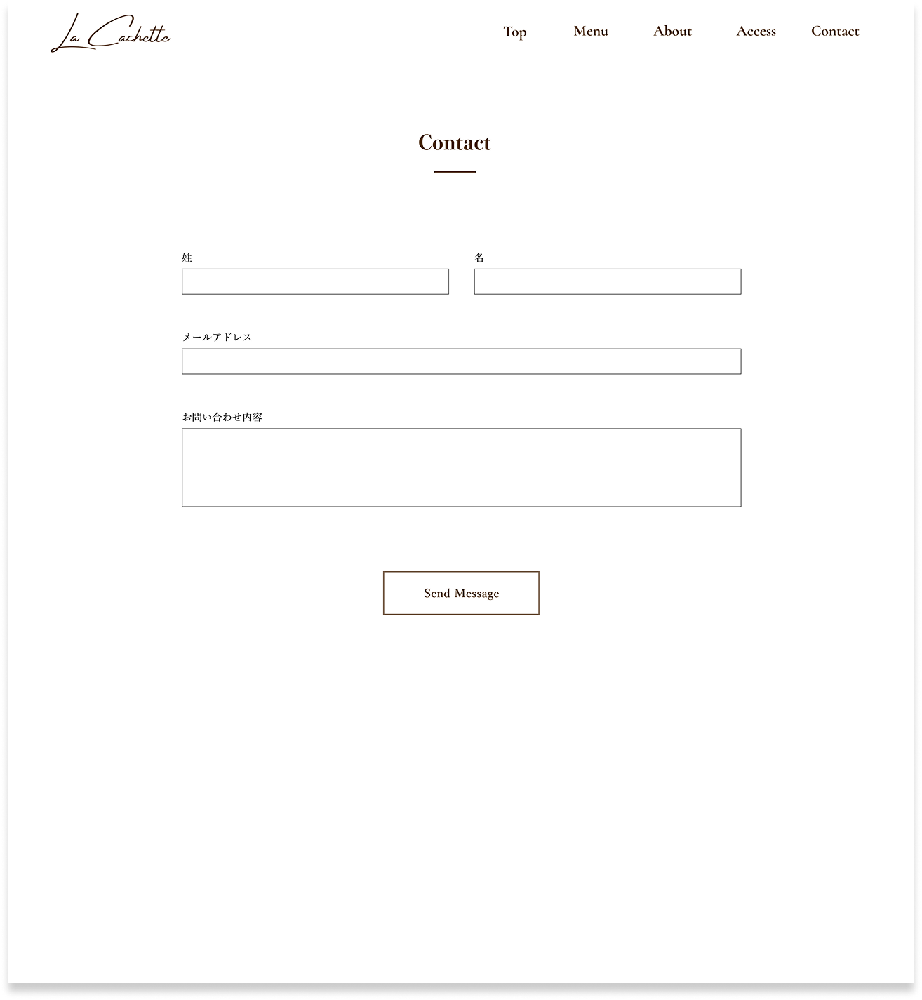
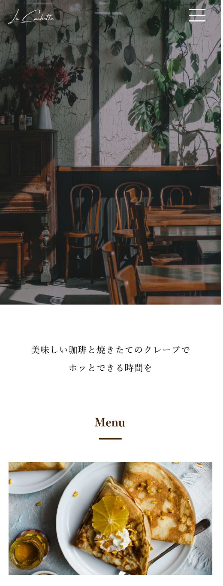
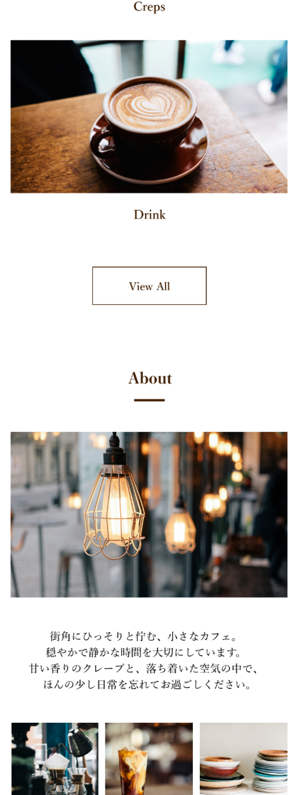
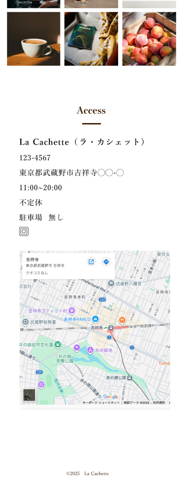
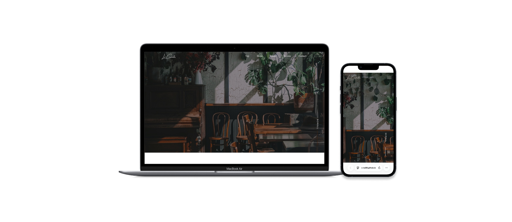

La Cachette（オリジナルサイト）
実在店舗をモデルに、
空間の雰囲気やターゲット層を踏まえ、
構成設計から制作した自主制作サイトです。

- ターゲット
- 20〜30代の女性を中心に、
日常から少し離れ、
ゆったりとした時間を過ごしたい方を想定。 - 制作目的
- スクールの卒業制作として、
隠れ家のような空間の魅力を可視化し、
来店のきっかけを生み出すことを想定。 - 担当範囲
- 企画 / 情報設計 / デザイン / コーディング
- 使用ツール
- Figma / VS Code
- 制作期間
- 1.5ヶ月
2025.10 - URL
- https://s-na98.github.io/lacachette/
店舗の魅力は空間体験にあるため、その心地よさをWeb上でどう表現するかが課題でした。
情報を詰め込みすぎず、 余白と写真を活かした構成とすることで、ゆったりとした時間の流れを感じられるデザインを 意識しました。
また、スクロール時にヘッダーが背景と重なり 視認性が低下する課題があったため、JavaScriptを用いてヘッダーの色が変化する仕様を実装。
デザイン性だけでなく、可読性も意識して制作しました。
Site Design



Design Concept
実際に何度も訪れている店舗をモデルに、まずは「なぜこのお店が好きなのか」を言語化するところから始めました。
美味しさはもちろん、 温かい接客や、店内に広がる甘い香り、窓から見える電車の風景など、味覚だけでなく、空間そのものから魅力であると感じたため、情報を詰め込みすぎず、写真と余白を活かした構成を意識しました。 参考サイトを複数リサーチし、落ち着いたトーンやフォント選び、余白設計の違いを比較。
その中で「静かに流れる時間」を感じられるデザインを目指しました。
また、スクロール時の視認性や操作性にも配慮し、必要に応じてJavaScriptを用いた実装を行っています。



Learnings
感覚だけでなく、考えながらつくることの楽しさを実感しました。
好きという気持ちだけでなく、なぜその構成にするのか、なぜその余白にするのかを一つひとつ考えながら形にしていく過程は、 難しさもありましたが、それ以上に大きな楽しさがありました。
特に、これまで苦手意識のあったJavaScriptの実装にも挑戦し、 自分で調べながら機能を形にできた経験は大きな自信になりました。
考えて設計し、コードで実現するという一連の流れの楽しさを実感できたことが、 今の制作への向き合い方の土台になっています。

Desktop / Mobile